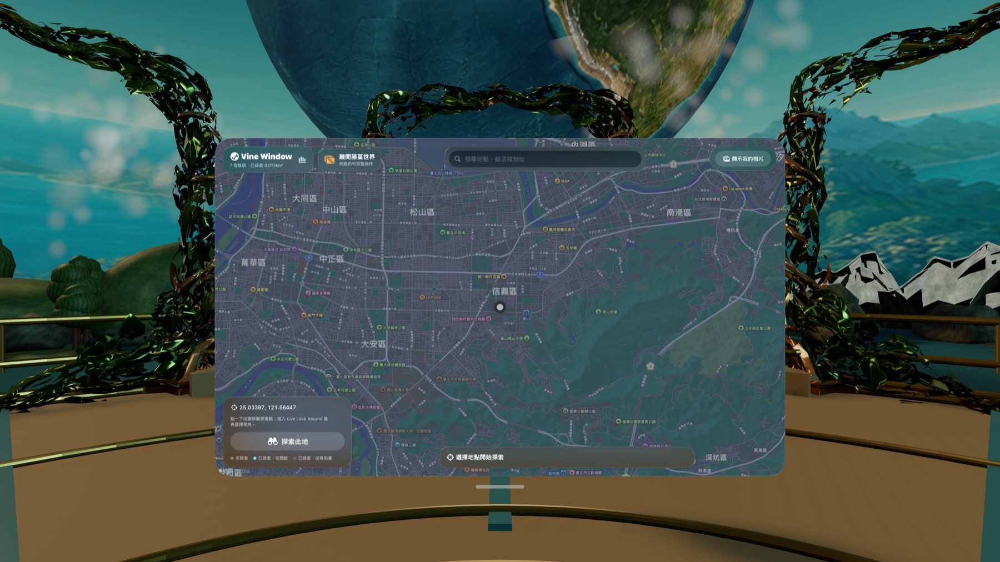
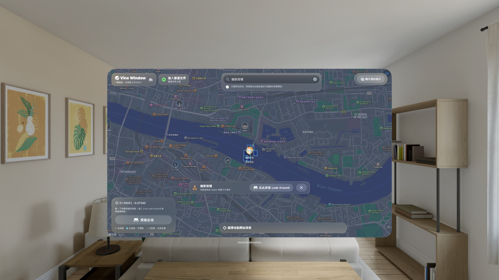
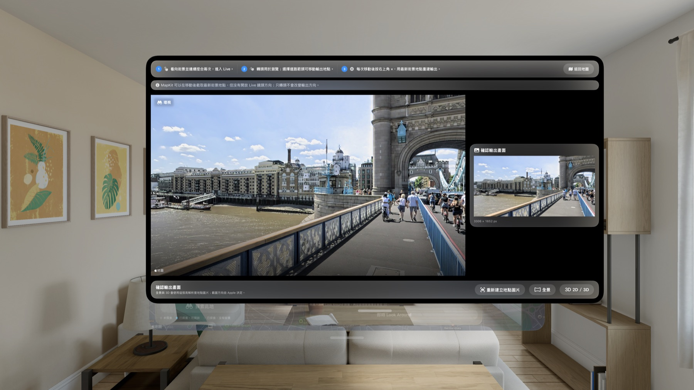
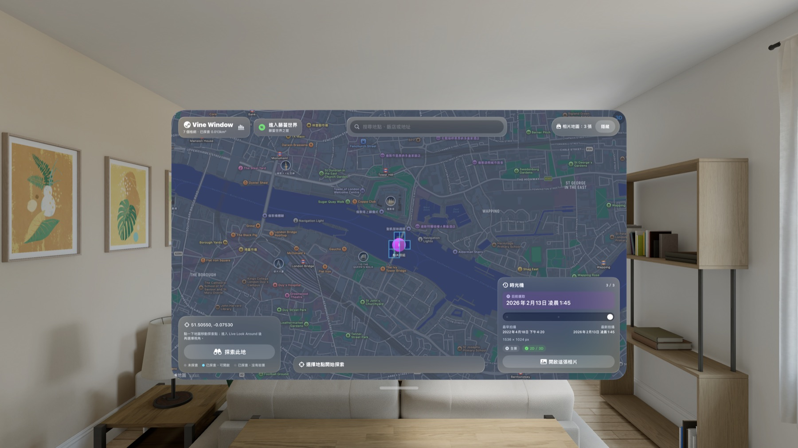
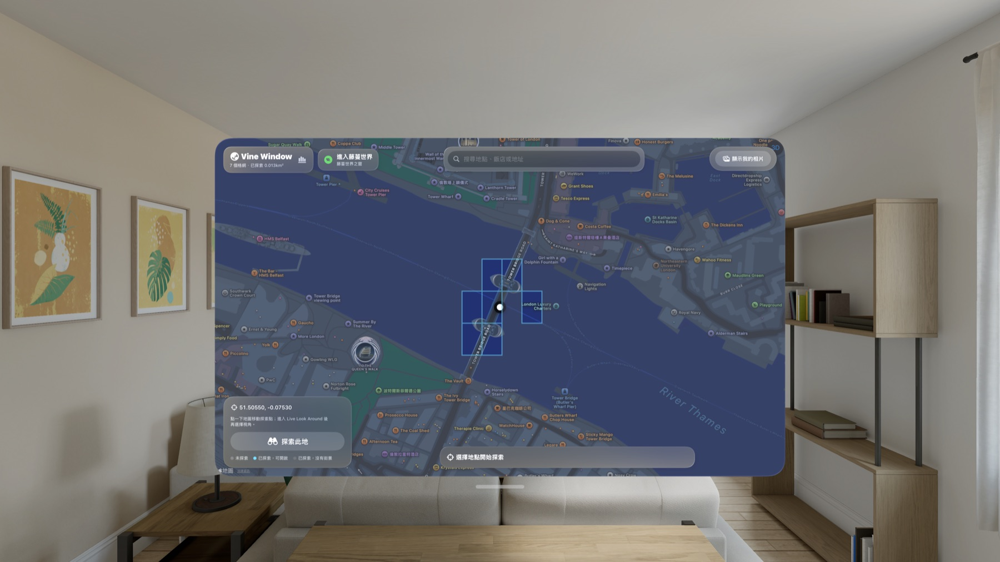
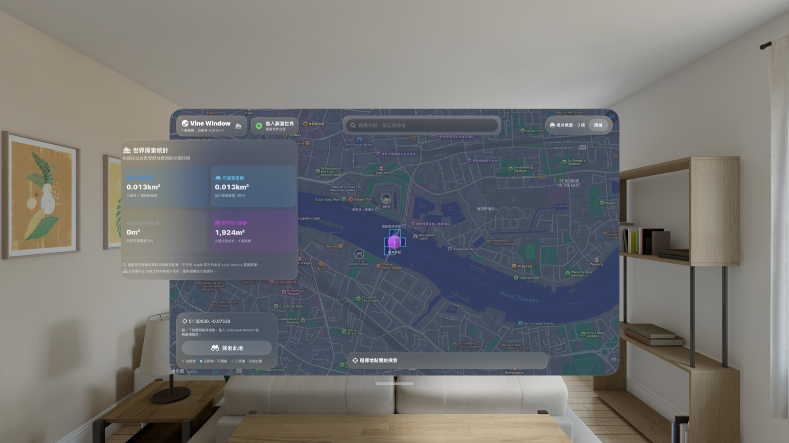

打開一扇窗，看見想先了解的地方，也重新走進曾經留下的回憶。
從 Apple 地圖搜尋真實地點，探索可用的 Look Around 街景；再把有位置資訊的相片放回地圖與時間軸，慢慢長成一座只屬於你的空間世界誌。

找到地點，也看見每一次探索留下的範圍
選擇地點後，Vine Window 會先請求該位置的 Look Around。若沒有影像，App 會在有上限的距離與時間內檢查鄰近位置，並保留從原始地點到找到場景位置的路徑。每次實際採樣都會揭露一塊迷霧：青色表示找到街景，灰色表示此次沒有找到，網路或 Apple 服務失敗則不會被誤記成沒有涵蓋。

在 Live Look Around 繼續走，再決定如何觀看
Live Look Around 是能持續沿街移動的入口。確認場景後，App 會建立 3306 × 1652 的平面場景圖，可用 Quick Look 全景開啟、在大型 2D 平面觀看，或在支援的 Apple Vision Pro 上產生具深度感的 Spatial 3D 呈現。場景圖是 MapKit 提供的平面快照，不會被描述成拼接的 360 度來源。

用相片時光機重訪同一個地方
授權相簿後，App 只在裝置上建立位置、時間與顯示方向等中繼資料索引，不複製也不修改原始相片。鄰近相片會組成時間排序的相片堆，可查看最早、最新與目前選取的拍攝時間，在同一個檢視器前後切換，並於符合條件時開啟全景或 Spatial 3D。

一座只描述你實際看過哪裡的私人圖誌


隱私與資料邊界
App 不需要帳號、登入、App 內付款、訂閱或外接配件。探索紀錄、迷霧狀態、相片索引與方向修正保存在裝置上；相片原始檔留在 Photos Library。Look Around 場景圖只作為暫時快取，不會保存到相簿、上傳、同步，也不會拿來重建 Apple 影像。
Vine Window: Spatial Atlas visionOS 1.0 已於 2026 年 8 月 13 日在 App Store 上架，適用於 Apple Vision Pro，支援 20 種語言，年齡分級為 4+；美國商店售價為 US$3.99。
Open a window onto places you want to understand—and places you remember.
Search real places through Apple Maps, explore available Look Around street imagery, then place geotagged photos back onto a map and timeline that grows into your own spatial atlas.
Find a place—and see the ground each exploration reveals
After you select a destination, Vine Window first requests Look Around at that point. If imagery is unavailable, the app checks nearby locations within bounded distance and time limits, preserving the path from the original destination to a found scene. Every real sample reveals a fog tile: cyan for imagery found and gray for a confirmed miss. Network or Apple service failures are never mislabeled as missing coverage.
Keep walking in Live Look Around, then choose how to view the result
Live Look Around is the route for continuous street navigation. Once a scene is confirmed, the app creates a 3306 × 1652 flat scene image for Quick Look panorama, a large 2D canvas, or a depth-aware Spatial 3D presentation on supported Apple Vision Pro hardware. The UI states that this is a MapKit flat snapshot—not a stitched 360-degree source.
Use the photo time machine to revisit one place
After Photos authorization, the app builds only an on-device metadata index for location, capture time, and display rotation. It does not copy or edit originals. Nearby photos become chronological stacks with earliest, latest, and selected times. Browse the same stack without closing the viewer, correct rotation, and use panorama or Spatial 3D when an image is eligible.
A personal atlas that describes only what you actually sampled
Privacy and data boundaries
No account, sign-in, in-app payment, subscription, or external accessory is required. Exploration records, fog state, photo metadata, and rotation corrections stay on device, while originals remain in Photos. Look Around scene images are temporary cache artifacts: they are not saved to Photos, uploaded, synchronized, or used to reconstruct Apple imagery.
Vine Window: Spatial Atlas visionOS 1.0 became available on the App Store on August 13, 2026. It is designed for Apple Vision Pro, supports twenty languages, carries a 4+ age rating, and is priced at US$3.99 in the United States.